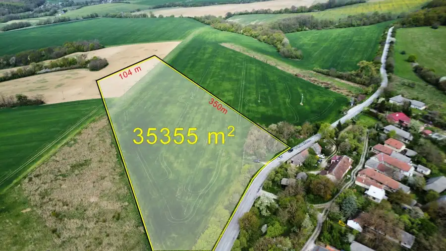
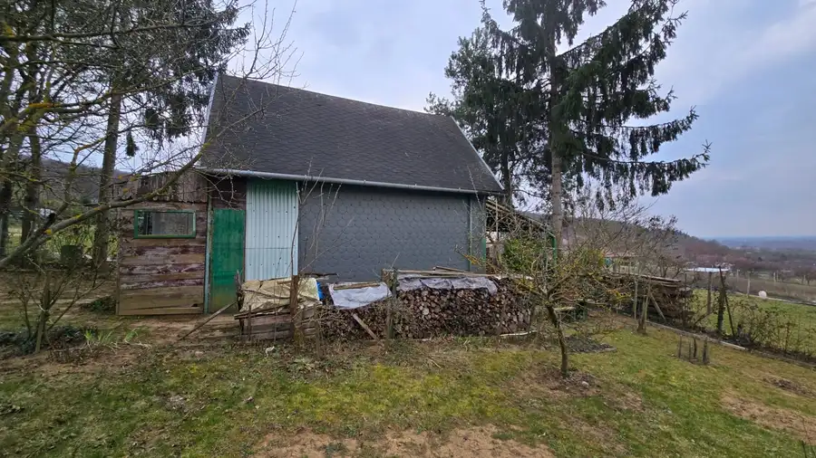
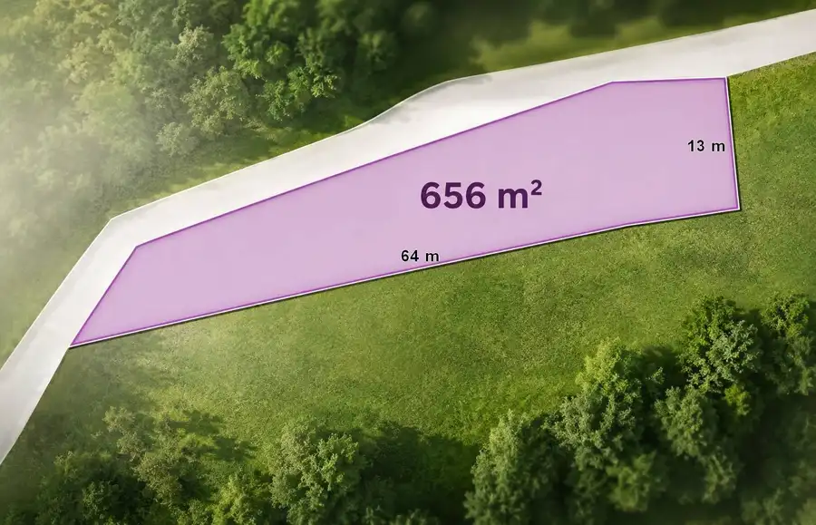

3-izbový byt so záhradou a garážou – Sadová ulica, Piešťany
Piešťany
- Dispozícia3-izbový
- Plocha64 m²
- Stavčiastočne prerobený
- Energetická triedaB
O nehnuteľnosti
Na druhom poschodí menšieho tehlového bytového domu so štyrmi bytmi vás čaká príjemné rodinné bývanie, kde máte viac pokoja než hluku a viac zelene než betónu. Dom je zateplený, má novú strechu a pôsobí udržiavane – presne tak, ako má vyzerať miesto, kde chcete dlhodobo bývať.
Byt má výmeru 64 m² a praktickú dispozíciu s tromi samostatnými izbami, vďaka čomu je ideálny pre rodinu, ale aj pre tých, ktorí potrebujú pracovňu či hosťovskú izbu. Kuchyňa so špajzou ponúka dostatok priestoru aj úložných možností, kúpeľňa a WC sú oddelené a balkón orientovaný na juh smeruje do pokojnej záhrady.
Veľkou pridanou hodnotou je vlastná záhradka spolu s podielom na spoločnej záhrade, čo v tejto lokalite rozhodne nie je samozrejmosťou. K bytu patrí pivnica a najmä veľká vykurovaná garáž priamo pod domom, vybavená umývadlom – ideálna nielen na parkovanie, ale aj ako dielňa, sklad alebo bezpečný priestor pre bicykle a kočíky. Bonusom je ďalšie parkovacie miesto pred domom.
Byt je čiastočne zrekonštruovaný, má vlastné kúrenie, plastové okná so žalúziami, bezpečnostné vchodové dvere, laminátové podlahy v izbách a dlažbu v chodbe a kúpeľni. Interiérové dvere sú pôvodné, čo novému majiteľovi ponecháva priestor dotvoriť si interiér podľa vlastného vkusu. V prípade záujmu bude byt kompletne vyprataný.
Sadová ulica patrí medzi vyhľadávané a tiché lokality Piešťan. Centrum mesta je dostupné do 10 minút pešou chôdzou, v okolí nájdete školy, škôlku, obchody aj služby – všetko potrebné pre pohodlný každodenný život bez nutnosti presadnúť do auta.
Ak hľadáte byt, ktorý ponúka viac než len bývanie v paneláku, a chcete kombináciu súkromia, zelene, garáže a výbornej polohy, tento byt si rozhodne zaslúži vašu pozornosť.
✔️ Kompletný právny servis je zahrnutý v cene
✔️ V prípade potreby zabezpečíme aj financovanie
Radi vám byt osobne predstavíme – niektoré veci sa jednoducho musia zažiť na vlastné oči.
Nezmeškajte príležitosť a zarezervujte si prehliadku ešte dnes!
Pre viac informácií a termín prehliadky nás môžete kontaktovať na telefónnom čísle alebo na
Parametre
| Celková rozloha | 64 m² |
|---|---|
| Úžitková plocha | 64 m² |
| Poschodie | posledné poschodie |
| Počet poschodí | 2 |
| Počet izieb | 3 |
| Stav | čiastočne prerobený |
| Kúpeľňa | áno |
| Vykurovanie | vlastné - plyn |
| Balkón | áno - 1 |
| Pivnica | áno |
| Garáž | áno - 1 auto |
| Parkovanie | vlastné vyhradené |
| Postavené z | tehla |
| Zariadenie | čiastočne |
| Zateplený objekt | áno |
| Energetický certifikát | B |
| Bezbariérový prístup | nie |
| Okná | plastové |
| Orientácia | sever/juh |
| Dátum zverejnenia | 2. 1. 2026 |
Kde to je
Mohlo by Vás zaujímať

Pozemok2 115 000 €Pozemok 35 355 m² vhodný na chov koní či hospodárstvo – Prašník Prašník 35355 m² VAŠE REALITY s.r.o. ponúkajú na predaj rozľahlý poľnohospodársky pozemok o výmere až 35 355 m² (3,53 ha) v obci Prašník – časť Grnča, len pár minút…
Záhrady6 39 000 €Pozemok s chatkou a nádherným výhľadom v Sokolovciach | 645 m² | elekt Sokolovce 645 m² VAŠE REALITY s.r.o. ponúkajú na predaj slnečný oplotený pozemok o výmere 645 m² v tichej a vyhľadávanej lokalite obce Sokolovce, ideálny na oddych,…
Pozemok4 39 000 €Stavebný pozemok 656 m² Prašník – Grnča | Pokoj vidieka Prašník 656 m² VAŠE REALITY s.r.o. ponúkajú na predaj stavebný pozemok v obci Prašník – časť Grnča, nachádzajúci sa v tesnom susedstve malebnej chalupy, ktorú…